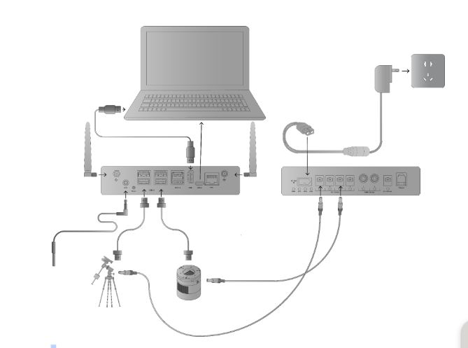

Introduction
Thank you for purchasing StellarMate Pro. StellarMate Pro (SM Pro) is a compact and powerful Astrophotography Controller that supports numerous Mounts, Cameras, and other astronomical equipment. SM Pro is a complete astrophotography solution and comes preloaded with all the necessary software and drivers required to operate astronomical equipment, no additional 3rd party software is required.
In addition to its role as a dedicated astronomical equipment controller, SM Pro offers comprehensive power distribution capabilities. It can power up to four 12V DC devices, two 12V Dew Heaters, and one adjustable voltage output ranging from 3-9V. To power all connected devices, a 12V @ 10A DC regulated power supply (Not included) is required. The unit ships with a robust high-density XT-60 connector, engineered to withstand currents of up to 60A.
WARNING
SM Pro does not include a Power Supply. A regulated 12V power supply rated at 10A or higher is required. Do not connect StellarMate Pro to a 12V field battery without a 12V Regulator as this may cause irreversible damage to the unit and/or connected devices. The official StellarMate Pro Power Supply (IKA-834) is certified to work with StellarMate Pro.
SM Pro is equipped with a built-in GPS/GLONASS receiver that provides highly accurate location and time services necessary for accurate and reliable operations of your equipment whether you are on the field or in a stationary observatory. Passive GPS and WiFi antennas are optimized to provide high gain even in noisy environments. Reliable communication between SM Pro and your controller (Mobile, Tablet, or PC/Mac) is critical for the operation of the unit.
SM Pro provides unparalleled freedom in selecting your favorite platform to control your equipment:
- Standalone: Since SM Pro is a mini Computer, you can connect it to an external monitor via HDMI cable and connect a mouse/keyboard to use StellarMate OS directly. However, since SM Pro is usually mounted on the telescope, this control method is not recommended.
- Mobile: Operate SM Pro remotely via WiFi using StellarMate App for Android/iOS. It is highly recommended to run StellarMate App on modern Tablets/iPad with screen sizes 10” or more to get the best experience. While phones are supported, the SM App is optimized to run on tablets.
- Windows/Mac/Linux: Use Ekos astrophotography tool on Windows, MacOS, or Linux. Remotely control StellarMate via WiFi, Local Area Network (LAN) or Wide Area Network (WAN). Ekos supports advanced functionality including mosaic planner and scheduler.
Using StellarMate Pro is simple. To get started right away:
- Connect your equipment (Mount, Camera, DSLR, Focuser, Filter Wheel..etc) to StellarMate Pro via USB or WiFi.
- Power your equipment via connecting them to SM Pro power ports.
- Connect to StellarMate Pro from either your Mobile, Tablet, or Laptop/Desktop Computer.
- Start controlling your setup and image from any major platform.
